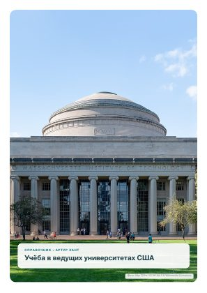
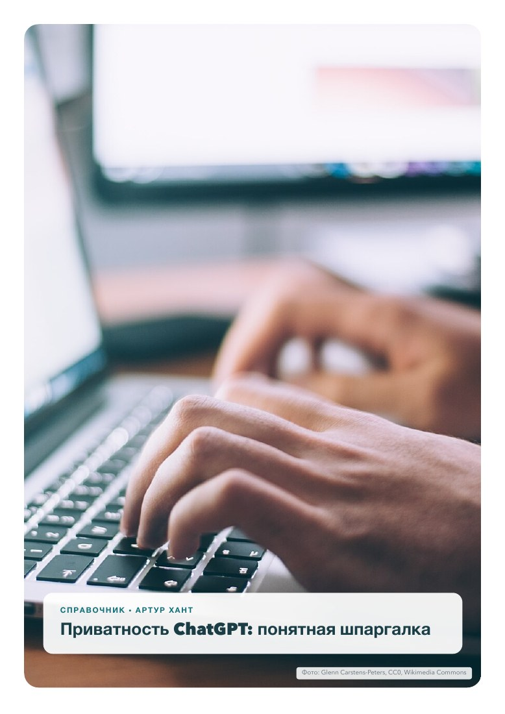
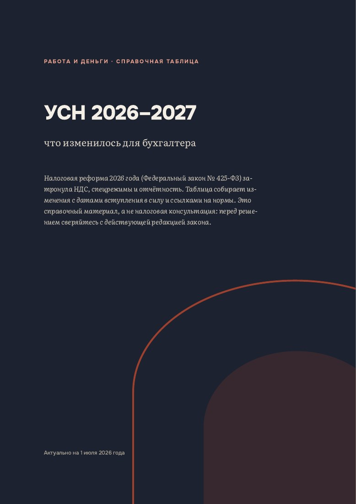
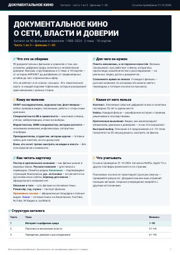
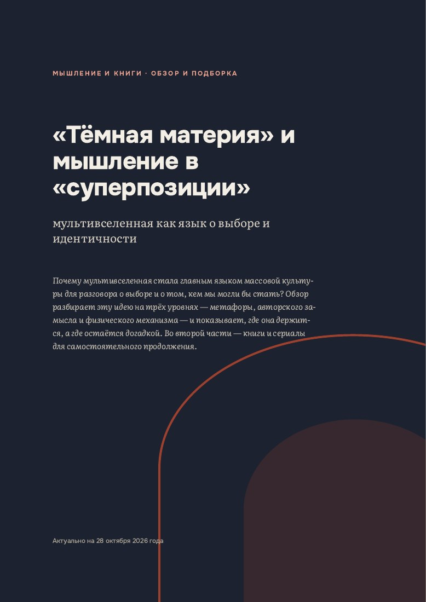
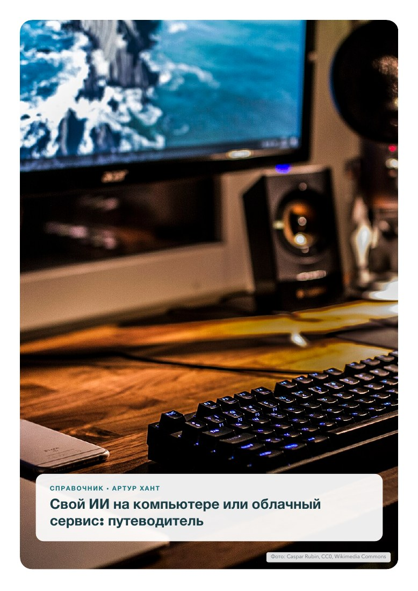

OSINT-аналитик и Prompt-инженер, автор справочников. Один специалист вместо трёх фрилансеров — для вашего курса, блога, подкаста или онлайн-школы: беру на себя технику, нейросети и поиск информации. А чтобы вы увидели, как я работаю, — бесплатная библиотека из 22 справочников.
Для блогеров, авторов подкастов, экспертов, преподавателей, онлайн-школ, площадок онлайн-курсов, лекториев, школ и вузов. Разовая задача или постоянно в вашей команде — удалённо и без созвонов.
Факты, исследования, статистика и примеры для уроков, выпусков и постов — из открытых источников, со ссылками и датой проверки.
Платформы для курсов, ИИ-инструменты, книги, видеокурсы, базы знаний — сравню по понятным критериям под вашу задачу.
Гайды, чек-листы, шпаргалки, справочники и задания для учеников. Нейросети ускоряют работу, а проверяю всё я.
Информационная поддержка для управленческих решений: варианты, критерии, веса и понятный вывод.
Структура, текст и аккуратная вёрстка на готовом шаблоне — без индивидуального дизайна.
Текст выступления или короткого видео: зацепка, главная мысль и призыв к действию.
Сайт и страницы, ссылка-визитка для соцсетей, платформа курса, рассылки. Поддержу, если что-то перестало работать.
28 секунд: одна цифра из справочника — откуда она, как проверена и как справочник приводит клиентов.
Выберите тему, которая нужна сейчас. Каждая страница справочника устроена одинаково, поэтому через десять страниц вы читаете его как таблицу.
Навыки, коннекторы и выбор между локальной и облачной моделью.
Открыть → 1 материалЧто сервисы хранят, на чём учатся и где это выключить.
Открыть → 2 материалаУчёба в вузах США, экзамены и сертификации.
Открыть → 1 материалПорядок на Mac и полезные программы.
Открыть → 4 материалаПлощадки, платформы и налоги.
Открыть → 2 материалаДокументальное кино, книги и сериалы.
Открыть →Справочники, для которых не нужна подготовка в ИТ: учёба за рубежом, приватность нейросетей, налоги, кино и книги, выбор нейросети для работы.

Учёба и карьераЭкзамены, 27 вузов с рейтингами, 37 специальностей, стипендии для студентов из России, визы, жильё и правила об ИИ.

Приватность ИИChatGPT, Claude, Gemini, NotebookLM, Perplexity и ElevenLabs: что хранят, на чём учатся и где это выключить.

Автору и бизнесуНалоговая реформа по закону № 425-ФЗ в двух таблицах — на 2026 и 2027 годы.

КругозорКаталог в трёх частях: 86 фильмов и сериалов о том, как устроены интернет, пропаганда и доверие.

КругозорОбзор и подборка книг и сериалов о выборе, сожалении и параллельных версиях жизни.

ИИ на практикеЧто поручить ИИ в офисе, сервисы в России, какие данные нельзя отдавать в облако, оборудование и цены.
Метод из OSINT-аналитики, применённый к вопросам, которые волнуют всех: что выбрать, где учиться, куда загружать данные.
Только открытые источники: официальная документация, законы, сайты вузов, вакансии, исследования.
Сопоставляю источники, фиксирую даты и ссылки, отделяю факты от оценок.
Единый шаблон страницы, сравнительные матрицы и понятные веса критериев.
Дата проверки, риски и то, чего материал не покрывает, — прямо в документе.
22 PDF, около 1 726 страниц. Скачивайте, делитесь с коллегами, используйте в работе и учёбе.
Все платные каталоги, новые справочники и обновлённые версии бесплатных. Подписка «Вся библиотека» на Boosty — 1 990 ₽ в месяц. Новым подписчикам первый месяц — 995 ₽.
Все документы открыты по подписке «Вся библиотека» на Boosty. В каждом посте — все версии: цветной PDF, ч/б PDF и DOCX для экономной печати и Markdown.
Все платные материалы, новые справочники и обновлённые версии бесплатных, пока действует подписка.
Заочное обучение в государственных вузах 19 городов, рейтинги вузов, лучшие частные вузы; подборка для профориентолога.
Подборка для любого промпт-инженера: книги, курсы, сообщества и банки промптов. Применение показано на примере образования и HR.
Где продавать курсы, книги и шаблоны: комиссии, выплаты и условия.
Анонсы новых материалов и обновлений выходят сразу в обоих сообществах. Выбирайте, где вам удобнее.